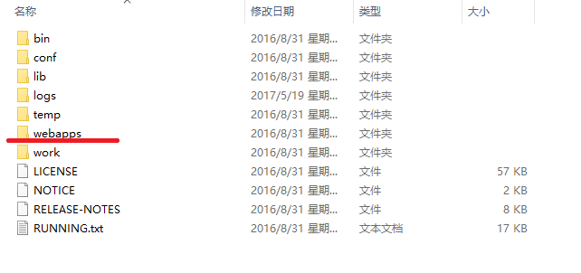
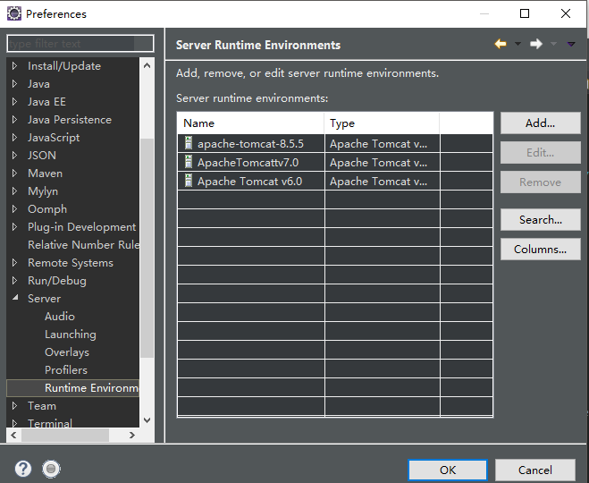
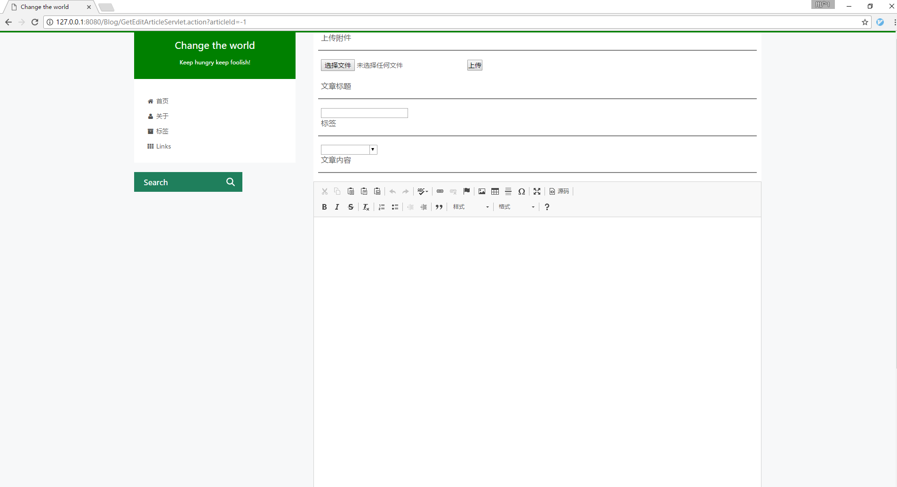

搭建博客
因为我做的是个人博客，博客中有些环境就是默认的！所以我们需要到具体的环境中去配置该环境，这样才能正常启动该博客
1.1 博客运行环境
本程序运行在 Win10 系统环境下，使用的是 Xampp 集成环境运行。
以下是详细介绍：
1. 运⾏于 win10 操作系统下
2. 数据库为 Mysql, 版本需要 5.5 以上
3. 后台处理使用的是 Java, JDK需要 1.8 以上
4. web服务器使用的是 Tomcat, 版本需 8.5.5 以上
5. 因为是个人博客, 需将管理员用户的基本信息存储进数据库才能使用博客
1.2 运行环境搭建
直接在tomcat服务器上搭建我们需要将博客文件拷贝到webapps,然后启动服务器，我们就可以访问了，如图

间接在tomcat服务器上搭建我们的博客，即我们工程开发师在eclipse上搭建并运行我们的博客，我们需将博客导入eclipse的工程目录
然后需要在eclipse中导入tomcat服务器，我们需进入eclipse中的Window->Preferences中
然后找Server中的Runtime Environment,点击Search

弹出如下界面，我们找到tomcat服务器的安装路径，点击确定，我们eclipse就与tomcat关联起来了
1.3 数据库环境搭建
我们将 Xampp 集成环境下载下来并将其安装到自己的电脑上，然后打开xampp-control.exe
弹出如下界面，我们需将其中的Apache与MySQL点击Start，让它运行起来
博客配置
其中博客中有一些个人数据以及博文的存储、评论的存储，所以我们需要一些博客的配置
2.1 数据库基本表的创建
开发用户：root
开发用户密码：[空]
建库：
create database Blog;
//建立数据库，数据库名为 Blog
用户信息表
create table Users(
id int auto_increment primary key,
username varchar(20) not null,
password char(32) not null,
showName varchar(20) not null,
iconPath varchar(255) not null,
gitHubUrl varchar(255) not null,
blogName varchar(50) not null,
pageView int not null
)engine = INNODB character set utf8 collate utf8_bin;
//存放用户实体信息
文章信息表
create table Article(
id int auto_increment not null primary key,
title varchar(100) not null,
content text not null,
date timestamp not null,
tagId int not null
)engine = INNODB character set utf8 collate utf8_bin;
//存放文章实体信息
标签信息表
create table Tag(
id int auto_increment primary key not null,
tagName varchar(20) not null
)engine = INNODB character set utf8 collate utf8_bin;
//存放标签实体信息
评论信息表
create table Comment(
id int auto_increment primary key,
email varchar(50) not null,
username varchar(50) not null,
content text not null,
date timestamp not null,
articleId int not null
)engine = INNODB character set utf8 collate utf8_bin;
//存放评论实体信息
然后我们在浏览器中访问127.0.0.1:80，我们可以打开如下页面
点击右上角的phpMyAdmin,我们在sql中输入上方的sql语句，然后得到以下界面
2.2 数据库中用户的插入
因为我们是个人博客，所以我在主页直接获取的是admin用户的博文进行显示，所以我们需要创建一个admin的用户，当然，如果你不想是
主页获取的admin的用户的博文进行显示，你想自己创建一个其他用户名的用户进行博文显示，那你就需要改主页博文的获取代码！
我们这就介绍插入用户的方法
//插入用户的sql语句
INSERT INTO `users`
(`id`, `username`, `password`, `showName`, `iconPath`, `gitHubUrl`, `blogName`, `pageView`)
VALUES
(1,'admin','e10adc3949ba59abbe56e057f20f883e','Leezp','','https://github.com/Leezps','LeezpBlog',0);
在sql中输入上面的语句过后，我们可以看见users表中多了一行信息，我们这的密码是MD5加过密的密码，它的明文是123456，我们后台
判断时是将输入的密码先MD5加密过后在进行比对，如果正确才算输入正确
管理员登录
3.1 管理员后台登录
在浏览器中我们输入127.0.0.1:8080/Blog/，出现如下界面
有可能你的界面中间是空白的，那是因为没有插入文章的原因，我这是已经插入文章了，所以显示是这个界面，我们可以将这个页面滑到底
部，然后有一个Manage的文本，我们可以点击它
然后弹出如下界面
在其中我们输入用户admin以及密码123456，然后点击登录，我们就进入了后台管理
3.2 登陆之后显示
登陆成功后显示如下
我们会看到登陆成功后的界面会弹出提示信息以及右上角会出现add按钮
博客管理
4.1 博文添加
当登录博客之后，我们点击add按钮，然后会跳到如下界面

我们可以添加附件到博客中，下面是添加附件的选项
点击选择文件
然后点击上传
然后是填写博客的信息
在其中我们可以添加图片，我们点击添加文章的图片
然后会弹出如下界面
在其中我们输入图片的url以及高宽等信息，我们将刚才我们上传到服务器上的图片显示出来
然后点击确认，我们就可以看见图片嵌入进文章
滑到页面的底部，我们就可以提交博文了！我们就可以看到刚才提交的博文了
4.2 博文修改
我们修改博客，需要查询出你要修改的博客才能修改，所以我们需要用到search
不输入任何东西进行查询，它会帮所有写的博客查询出来
我们可以发现每个博客都有edit这个按键，我们点击它，就可以修改博客了
然后我们又进入了博客编辑页面，我们就可以完成博文的修改了，点击提交，博文就修改完成了
4.3 博文删除
相信大家在刚才搜索出的博文目录可以看到博文还有个按钮，就是delete按钮，我们点击它就可以删除该博文了
评论管理
5.1 评论添加
我们点进一个博文里，然后对它进行评论，我们这是要评论必须将邮箱留下，所以这而有一些判断,当邮箱错误时，会出现如下提示

我们输入正确的评论时,我们博文局部刷新然后将博文添加到文章下面
5.2 评论删除
评论删除，我们需先点击search到该文章
然后点进这个文章，我们发现评论的右上角多了一个del按钮
点击del按钮，我们就可以删除该评论了